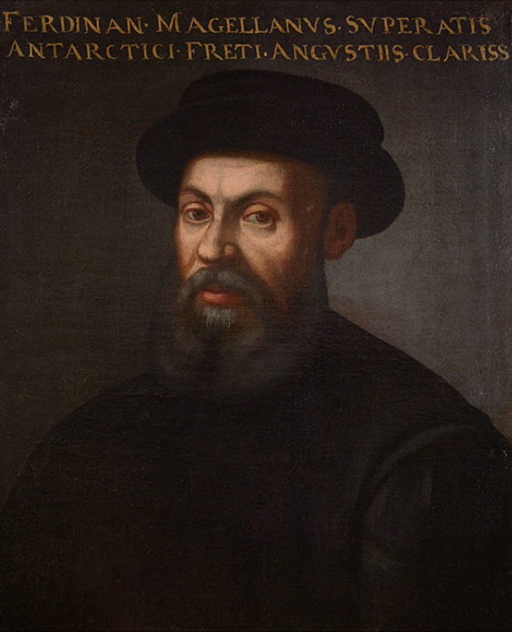
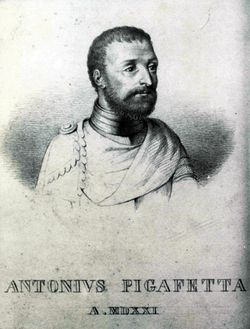
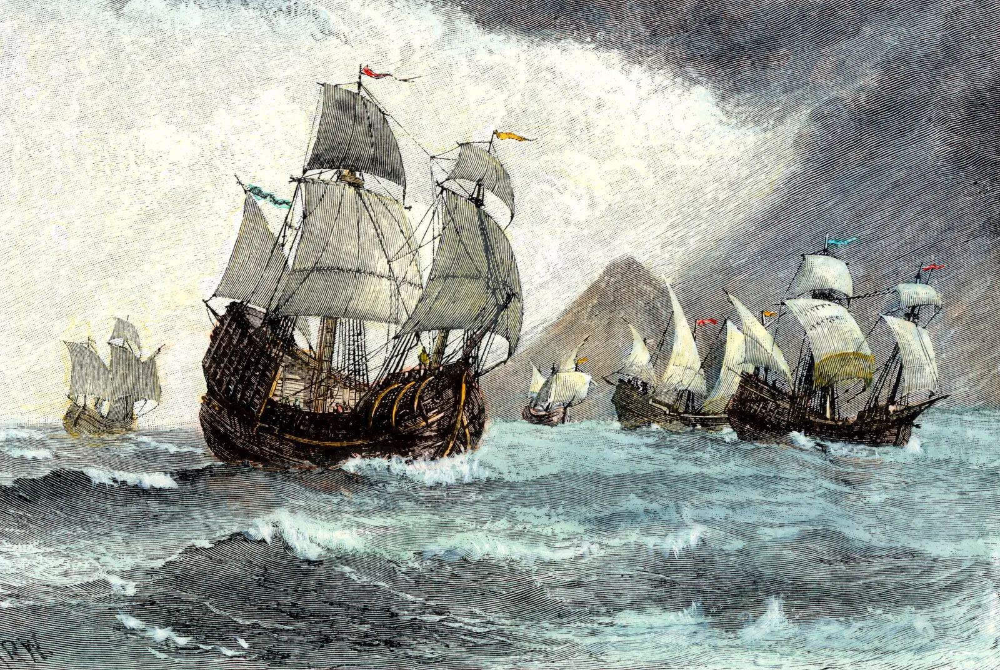
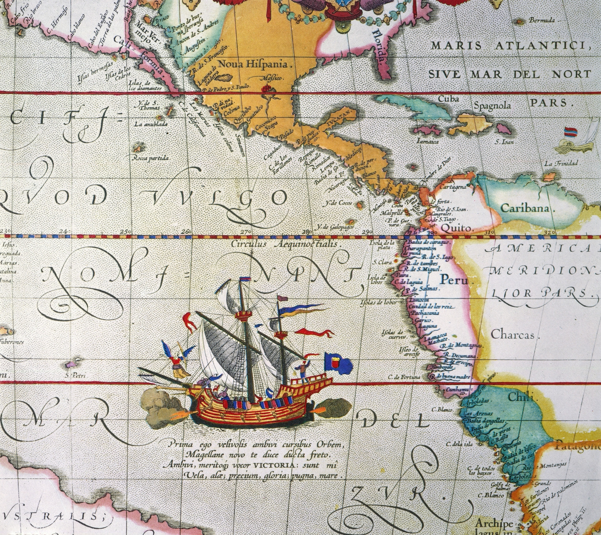
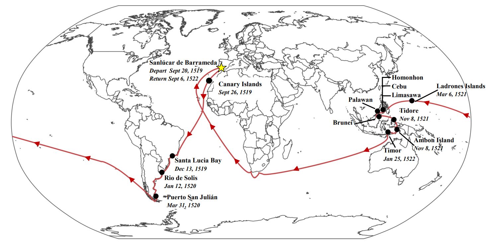

FIRST VOYAGE AROUND THE WORLD
It is a universal and global road because its itinerary
is developed throughout the main oceans and all the continents in both planet hemispheres.
The Magellan Route is the way traced by the nautical expedition made by the first world
circumnavegation in the dawning of the 16th century. This path was
organized and led by one of the most extraordinary explorer and sailor ever, Ferdinand Magellan,
who for the first time placed in the maps not only a new
and immense ocean (Pacific), which has then been fully navigated for the first time, but also the
Strait that connected the two big oceans in the planet,
the Atantic Ocean and the Pacific Ocean. This route was used during four centuries to connect the
East and the West through the sea, since it was the only
possible route used by ships until the construction of the Panama Canal in the 20th century.
The valuable contribution of this universal route to the
human history can be seen not only in the voyage itself, but also in the historical
background of the voyage and in the consequences it had in the
development of several civilisations.

FERDINAND MAGELLAN
Ferdinand Magellan, Portuguese Fernão de Magalhães, Spanish Fernando de Magallanes or Hernando de Magallanes, (born 1480, Sabrosa or Porto?,
Portugal—died April 27, 1521, Mactan, Philippines), Portuguese navigator and explorer who sailed under the flags of both Portugal (1505–13) and Spain
(1519–21). From Spain he sailed around South America, discovering the Strait of Magellan, and across the Pacific. Though he was killed in the
Philippines, one of his ships continued westward to Spain, accomplishing the first circumnavigation of Earth. The voyage was successfully terminated
by the Basque navigator Juan Sebastián del Cano.
Magellan was the son of Rui de Magalhães and Alda de Mesquita, members of the Portuguese nobility. At an early age he became a page to Queen Leonor,
wife of John II (reigned 1481–95) and sister of Manuel I (reigned 1495–1521), in Lisbon.
His father, Pedro de Magalhães, was a minor member of Portuguese nobility and mayor of the town. His mother was Alda de Mezquita. Magellan's siblings
included Diego de Sosa and Isabel Magellan. He was brought up as a page of Queen Eleanor, consort of King John II.

Antonio Pigafetta
Antonio Pigafetta was an Italian scholar and explorer. He joined the expedition to the Spice Islands led by explorer Ferdinand Magellan under the flag
of the emperor Charles V and after Magellan's death in the Philippine Islands Pigafetta was born into a wealthy Vicenza family, and studied navigation
among other things. He served on board the galleys of the Knights of Rhodes, and accompanied the papal nuncio, Monsignor Chieregati, to Spain. Later,
he joined the Portuguese captain Ferdinand Magellan and his Spanish crew on their trip to the Maluku Islands. While in the Philippines Magellan was
killed, and Pigafetta was injured. Nevertheless, he recovered and was among only 18 of Magellan’s original crew who, having completed the first
circumnavigation of the world, returned to Spain on board another vessel, the Victoria. Most importantly, Pigafetta kept a journal of his voyage,
and this is a key source for information about Magellan’s famous journey.

What are the the five ships being used in the voyage?
On Aug. 10, 1519, Magellan set sail with 270 men and five ships: the Trinidad (commanded by Magellan), the San Antonio, the Victoria, the Conception,
and the Santiago. From Spain, the fleet sailed to Brazil and then headed south, hugging the coast.
Trinidad was a nao (ship) of 100 tons (or 110 tons, Morrison has both) with square sails on the fore and main masts and a lateen mizzen. Its original
crew was 61. After Magellan's death and the burning of the Concepcion, Victoria and Trinidad (the San Antonio and the Santiago being lost earlier)
reached Tidore on 8 November 1521.
Antonio was a Spanish trading ship built in Cebu under the supervision of European boat-builders. It was docked at the port of Cavite to undergo
reconditioning and repair but at the end of October 1600, Don Antonio de Morga, Vice-Governor General of the Philippines, ordered it converted into a
warship and renamed it San Diego.
Victoria was a Spanish carrack and the first ship to successfully circumnavigate the world. The Victoria was part of a Spanish expedition commanded
by the Portuguese, Ferdinand Magellan, and after his demise during the voyage, by Juan Sebastián Elcano. The expedition began with five ships but the
Victoria was the only ship to complete the voyage.
Concepción was an early-16th-century Spanish carrack, one of the five ships of the Magellan-Elcano expedition to the Spice Islands (the Moluccas).
The expedition, finding itself short-handed, burnt the ship in the Philippines in 1521.
Santiago (ship) Santiago was an early-16th-century Spanish ship, a carrack, one of the five vessels of the Magellan - Elcano expedition to the Spice
Islands (the Moluccas). It was destroyed by a storm when it was sent on a scouting mission during the early stages of the expedition.

The Journey of the Voyage
September 20, 1519 - expedition sets sail from Sanlúcar de Barrameda, Spain.
February - August, 1520 - The ships winter in modern day Argentina. Crews mutiny but Magellan ultimately regains control.
November 28, 1520 - The expedition sails through the newly discovered strait. Magellan and crew becomes the first Europeans
to reach the Pacific Ocean.
March 6, 1521 - The expedition makes landfall in Guam after almost 100 days at sea.
April 27, 1521 - Magellan is killed in a battle with locals.
November 8, 1521 - Juan Sebastián Elcano leads two ships to the Moluccas, and eventually returns to Spain with one ship.
September 6, 1522 - After three years at sea, the one remaining ship of Magellan's expedition returns to Sanlúcar de Barrameda.
BATTLE OF MACTAN
April 27, 1521 - The day when the one of the Philippine hero Lapu-Lapu was fought against Ferdinand Magellan.
April 27,1521 - The Battle of Mactan (Cebuano: Gubat sa Mactan; Filipino: Labanan sa Mactan; Spanish: Batalla de Mactán)
was fought in the Philippines which is prior to Spanish colonization.The warriors of Lapu-Lapu, a native chieftain of Mactan Island,
overpowered and defeated a Spanish force fighting for Rajah Humabon of Cebu, under the command of Ferdinand Magellan, who was killed
in the battle.
The Battle of Mactan was a historical event that took place six centuries ago. In April 27, 1521. It is the first known and recorded
resistance of the Filipinos against foreign forces who aimed to invade and conquer the Philippines.
Lapu-Lapu (Baybayin: Abecedario: Lápú-Lápú) was a ruler of Mactan in the Visayas. Modern Philippine society regards him as the first
Filipino hero because he was the first native to resist Imperial Spanish colonization. He was born 1491 in Mactan and died 1542, Mactan.
There is an annual commemoration for the battle of Mactan in Mactan in Lapu-Lapu City, this is also the location where you can find
the Liberty Shrine and one of Cebu's tourism landmark - the statue of Datu Lapu-Lapu.

Timelines of Magellan Voyage
1494 - The Treaty of Jean Puma established approximate borders between the Spanish and Portuguese empires west of the Cape Verde islands.
This imperial competition was to prove critical to the exploration and exploitation of the New World riches.
1514 - Magellan was intent on finding a route to the Spice Islands accused of unlawfully trading with the Moors, the Portuguese king denied
Magellen permission to embark on Portuguese adventures.
1518 - Magellan moves to Seville, the Spanish gateway to the Indies, and seat of The Casa de Contratación in order to sell his idea to King
Charles I of Spain (later Emperor Charles V) and his consort Joanna I. The Spanish court, sitting at Aranjuez is convinced, and grants the
adventurer Spanish nationality as well as allocating considerable resources for his expedition.
1519 Departure from Seville.
September 20 Departure from Sanlúcar de Barrameda.
September 26 - October 3 Stopping in the Canary Islands to take in provisions.
November 29 Fleet reaches the vicinity of Cape St. Augustine.
December 13 Entering the bay of Rio de Janeiro.
December 27 Departure from Rio de Janeiro.
1520
January 10 Cape Santa María. Severe storm then forces Magellan to reverse course and head north, toward Paranaguá Bay.
January 12 Rio de la Plata
February 3 the fleet resumes its southward course but San Antonio found to be leaking badly. Halted for repairs.
February 5 Cape Corrientes
February 24 San Matías Gulf
February 27 Entering Bahia de los Patos.
March 31 Beginning of the overwintering stay at Puerto San Julián.
April 1 and 2 Mutiny on Victoria, Concepcion and San Antonio; death of Louis de Mendoza. Later execution of de Quesada, marooning of
de Cartagena. Alvaro de Mesquita becomes captain of San Antonio, Duarte Barbosa of Victoria.
End of April: Santiago is sent on a mission to find the passage. The ship is caught in a storm and wrecked. Survivors return to Puerto
San Julián. Serrano (João Serrão) becomes captain of the Concepcion.
July: Encounters with the “Patagonian giants” (likely the Tehuelche people).
August 23 or 24 Fleet departs Puerto San Julián for Río Santa Cruz.
October 18 Fleet leaves Santa Cruz.
October 21 Arriving at the Cape of the Eleven Thousand Virgins, entry to what would be known as Strait of Magellan.
End of October: San Antonio, charged to explore Magdalen Sound, fails to return to the fleet, instead sails back to Spain under Estêvão Gomes
who imprisoned captain de Mesquita. The ship arrives in Spain on May 21, 1521.
November 28 The fleet leaves the strait and enters the Pacific Ocean.
When out in the Pacific some of the crew get scurvy.
1521
January 24/25-28 Landfall on an uninhabited island, which Magellan names St Paul's (probably Puka-Puka). They stay for a few days
before continuing on.
March 6 Arrival at Guam and encounters with the Chamorro people.
March 16 Sighting of Zamal (Samar), one of the Philippine Islands. They landed on the uninhabited island of Humunu (Homonhon) where they
encountered fishermen from the nearby island of Zuluan (Suluan). They traded supplies with the locals and learned the local culture and the
names of nearby islands while their sick crew members recuperated.
March 28 They anchored off the island of Mazaua (Limasawa) where they met two rulers on a hunting expedition on the island, Rajah Kulambo
and Rajah Siawi, of the Rajahnate of Butuan and Calagan (Surigao), respectively. Magellan and his crew spent a few days as the
guests of the rulers.
March 31 First Mass in the Philippines held in Limasawa.
April 3 The fleet sets off for Cebu, guided by the balangay warships of Rajah Kulambo.
April 7 Arrival at Zubu (Rajahnate of Cebu). Magellan starts converting natives to Christianity, including Rajah Humabon, the ruler of Cebu.
April 27 Death of Magellan in the Battle of Mactan. Serrano and Barbosa are voted co-commanders.
May 1 At a local banquet Barbosa and 27 sailors (including Afonso de Góis, the new captain of Victoria after the election of
Barbosa and Serrano) are murdered and Serrano captured, later killed. The three remaining ships escape to the island of Bohol.
May 2 There are not enough men to handle three ships, thus the worm-infested Concepcion is burned down. Two ships remain:
Victoria and Trinidad. Gonzalo Gomez de Espinosa becomes captain of Victoria. Joao Lopez Carvalho is made as the Captain General.
The ships sail to Mindanao, Mapun, Palawan, and Brunei.
September 21 Carvalho is replaced by Espinosa as Captain-General. Juan Sebastian Elcano becomes captain of Victoria.
November 8 Arriving at Tidore in the Moluccas.
December 21 Victoria under the command of Elcano leaves the Moluccas to return home, sailing west towards the Cape of Good Hope.
Trinidad remains at Tidore for repairs.
1522
January 25 Victoria reaches Timor and starts to cross the Indian Ocean.
April 6 Trinidad under the command of Espinosa leaves the Moluccas heading home sailing east. After five weeks, Espinosa decides to
return to the Moluccas where he and his ship are captured by a Portuguese fleet under Antonio de Brito. However, the ship was wrecked
during a storm.
May 22 Victoria passes the Cape of Good Hope and enters the Atlantic Ocean.
July 9 Victoria reaches Santiago, Cape Verde.
September 6 Victoria returns to Sanlúcar de Barrameda under the command of Elcano, two weeks shy of three years after setting sail.
September 8 Victoria arrives at Seville, technically completing the circumnavigation.
1523 - Settlement of King Carlos I of Spain and Juana I with Ferdinand Magellan and Rui Faleiro signed at Valladolid, Spain.
Web Developer
Mark Ivan A. Sumalinog